| |
California's Great America 2018
 All right. There's been one final new for 2018 coaster that we've been ignoring on Incrediblecoasters. Well, actually, there's a few of them. But only one that we've been ignoring and managed to ride this year. And it's an RMC. Yep. We're back at California's Great America this year for our yearly visit up to Nor Cal. And by this point, you can probably figure out why we're here.
All right. There's been one final new for 2018 coaster that we've been ignoring on Incrediblecoasters. Well, actually, there's a few of them. But only one that we've been ignoring and managed to ride this year. And it's an RMC. Yep. We're back at California's Great America this year for our yearly visit up to Nor Cal. And by this point, you can probably figure out why we're here.
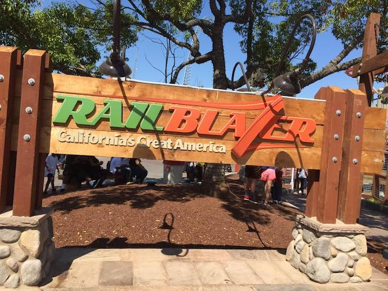
That's right. We're here to finally get on Railblazer.
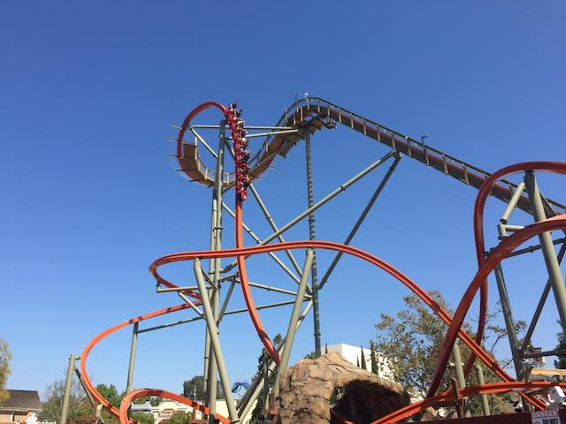
I know I've constantly heard nothing but praise for Railblazer (and Wonder Woman @ SFFT) for the past few months, and now I finally get to see if Railblazer lives up to the hype.
 I'll go into way more details later on in this update (Railblazer Review will come soon. Simply don't have time to write it now). But I'll just say this for now. RAILBLAZER IS FREAKING AWESOME!!! =D
I'll go into way more details later on in this update (Railblazer Review will come soon. Simply don't have time to write it now). But I'll just say this for now. RAILBLAZER IS FREAKING AWESOME!!! =D
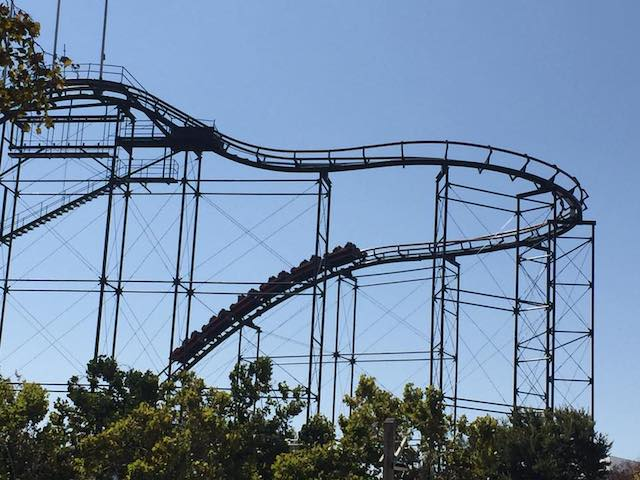
Apparently, they were doing something special on Demon for Haunt. But I didn't know about it until it was too late.
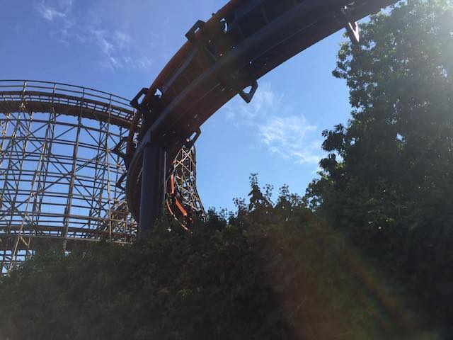
Oh well. It's only Demon.
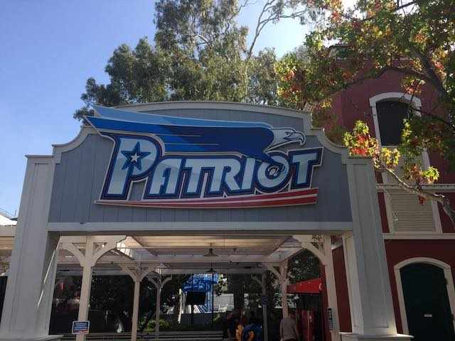
What's that? Someone here hasn't done Patriot and was last here when this was Vortex? We gotta fix that.
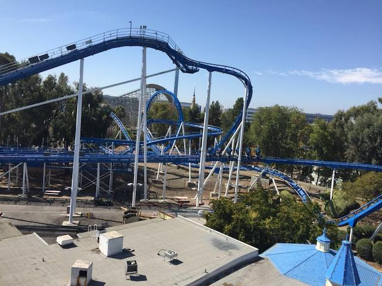
You know, I liked Patriot last time. But this time, it just seemed....meh. Slower and less interesting. I don't like being mean, but this still definetly is up there as far as Least Favortite B&Ms go.
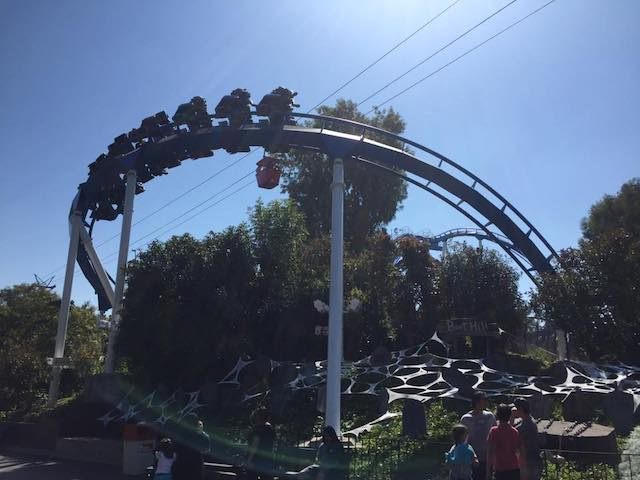
Hey. At least the headbanging is gone.
 The conversion of Stand Ups to Floorless coasters has been fine so far. I'm still just nervous that they're gonna think that it's fine to touch the really great Stand Up Coasters and ruin them.
The conversion of Stand Ups to Floorless coasters has been fine so far. I'm still just nervous that they're gonna think that it's fine to touch the really great Stand Up Coasters and ruin them.
Ooh. Enjoying the little bit of Haunt decorations scattered throughout the park.
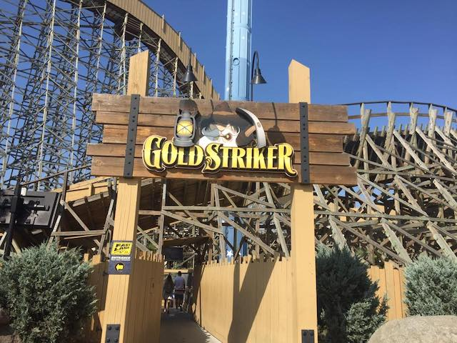
"Hey ya'll! Railblazer may be hot new sh*t! But doncha forget about me!"
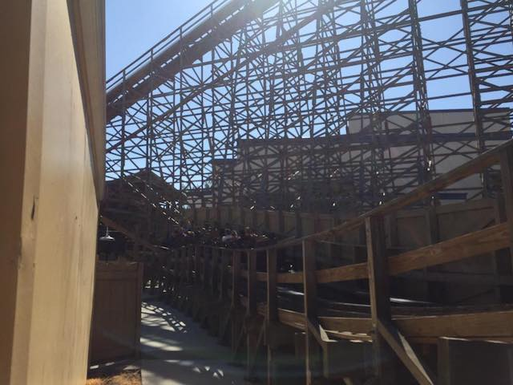
Still the best woodie in CA and the 2nd best GCI.
 Speaking of rides to not forget about, Top Gun is still awesome.
Speaking of rides to not forget about, Top Gun is still awesome.
 Apparently, they got a simulator since my last visit that I didn't know about until today. So we checked that out. Eh, it was OK. Nothing special, but fun enough to ride once.
Apparently, they got a simulator since my last visit that I didn't know about until today. So we checked that out. Eh, it was OK. Nothing special, but fun enough to ride once.
 Considering that you just drove up 5 hours to come here, and have another 5 hour drive back home late tonight, it's gonna be a while til you get in one of these things. >=)
Considering that you just drove up 5 hours to come here, and have another 5 hour drive back home late tonight, it's gonna be a while til you get in one of these things. >=)
 I don't like to spread rumors since I'm not that kind of coaster site. I'm NOT Screamscape. But I keep hearing rumors that something will go right there. ;)
I don't like to spread rumors since I'm not that kind of coaster site. I'm NOT Screamscape. But I keep hearing rumors that something will go right there. ;)
You know, it's been 8 years since we last rode Psycho Mouse (We've always avoided it since it gets a line). I think another ride on it is in order.
The Arrow Mice are...interesting rides. I know people sh*t on them (or at least used to) for the banked turns. But it does provide a fairly strong ride.
OH GOD!!! THIS THING BRAKES MUCH MORE AGGRESSIVELY THAN I REMEMBERED!
It's a Disk-O with a hump. NOT a coaster. It's fun, but do NOT market this like a credit.
At this point, the Intamin 2nd Generation Drop Towers aren't anything special, but they're still fun rides. I still like them.
 Oh no! Grizzly is closed today! I know I flat out ignored it on my last 2 visits since I don't like that ride. But now I don't have a choice! No Grizzly today!
Oh no! Grizzly is closed today! I know I flat out ignored it on my last 2 visits since I don't like that ride. But now I don't have a choice! No Grizzly today!
Yeah. This works as a lunch for me.
Still hard to believe that one of the last Bayern Curves left is here at CGA.
Crap. Grizzly opened up today. I guess this means we're riding it today after all.
Some of the most redundant and unnecesarry restraints on any coaster.
Gee. Walking around the park? Too hard. Gotta take the skyride.
Nah. You know we're just doing this for the view.
Ooh. Water park construction. I'd definetly like to check that out again sometime.
California's Great America welcomes our Silicon Valley overlords.
*Sigh* We'll never be able to ride anything with such long lines like this. =(
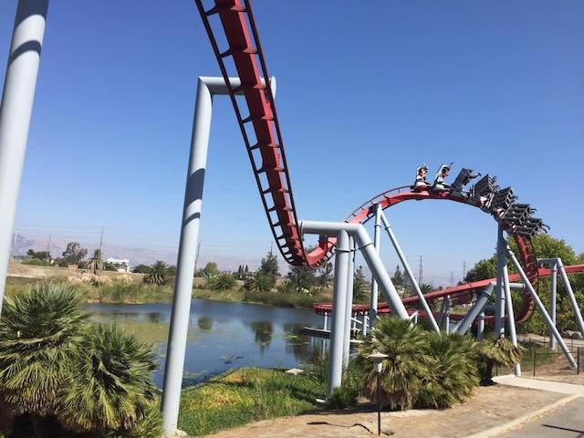
I know it's one of the shorter B&M Inverts, but this thing still really packs a punch and is definetly one of their better rides.
R.I.P the poor unfortunate souls who couldn't join us at CGA today.
So we decided to take a ride on Delerium. Why not? So we get in, the restraints come down, and the ride begins. It spins a little, and makes a tiny swing. Just getting started. And then, it slowly comes to a stop. And we're just awkwardly sitting at the bottom. Yep. Turns out Delerium broke down, and we had to get evacuated. BEST RIDE ON DELERIUM EVER!!!! ALMOST AS GOOD AS PONY EXPRESS!!!
Might as well get some shots while we're up here.
 Ariel shots of Railblazer.
Ariel shots of Railblazer.
 All right. Let's get some more rides on Railblazer, as well as talk about the ride in greater detail.
All right. Let's get some more rides on Railblazer, as well as talk about the ride in greater detail.
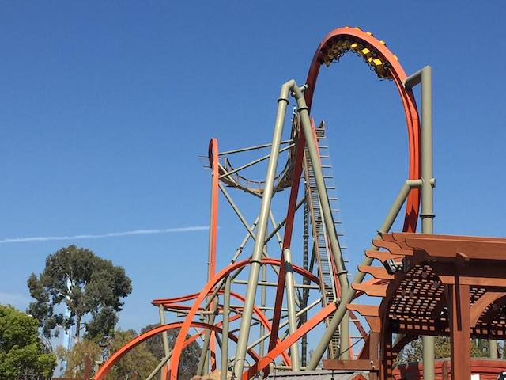
So Railblazer (and Wonder Woman) are the first RMC Raptors ever built. Kind of forget that this ride is included in all the RMCs, but honestly, it's better than a few of their I-Box coasters, and yeah. This ride kicks ass.
 I do have to say this. Railblazer is without a doubt, the most cartoony looking coaster built in a long time. Why? Because it's a single rail coaster. So it's just this really thin monorail track just twisting around in the air. It's like they just saw someone doodle a coaster on their high school desk, and then just built it. It's a very cool looking coaster.
I do have to say this. Railblazer is without a doubt, the most cartoony looking coaster built in a long time. Why? Because it's a single rail coaster. So it's just this really thin monorail track just twisting around in the air. It's like they just saw someone doodle a coaster on their high school desk, and then just built it. It's a very cool looking coaster.
 But more impressive than just looking really cool, is that it rides really well. Honestly, the best way for me to personally describe Railblazer is that it's kind of like riding a whip. It's very smooth, graceful, and elegant. But at the same time, it does whip around those turns and through those inversions. So while still feeling smooth, you do get a lot of snapping in those turns and inversions. It's kind of hard to describe (That's gonna be a fun review to write). Hopefully, some other enthusiasts who have ridden it can back me up on this.
But more impressive than just looking really cool, is that it rides really well. Honestly, the best way for me to personally describe Railblazer is that it's kind of like riding a whip. It's very smooth, graceful, and elegant. But at the same time, it does whip around those turns and through those inversions. So while still feeling smooth, you do get a lot of snapping in those turns and inversions. It's kind of hard to describe (That's gonna be a fun review to write). Hopefully, some other enthusiasts who have ridden it can back me up on this.
Oh yeah. Let's talk about the restraints on Railblazer. So yeah. Railblazer uses...intersting restraints. It actually is the first RMC to have OTSRs, but they're not like your typical OTSRs. They're more like a typical lap bar, but with a OTSR that feels like a seatbelt attached to it. I know some enthusiasts complained about these restraints, and while I'm not gonna lie and pretend like I'm a fan of them, I'm also not gonna pretend like I have a problem with them either.
 Peek a boo! Starbucks sees you!
Peek a boo! Starbucks sees you!
So we decided to take a break from the park and wander around the mall as the park transitions from normal hours to Haunt. Hey, we did everything we wanted. Works for me.
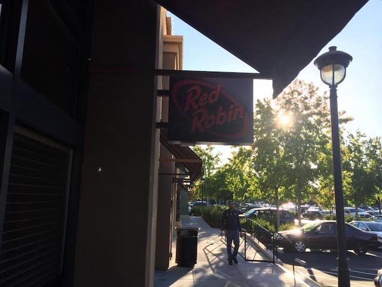
So it's been a while since I went to Red Robin since I ate there nearly every single week with friends for a semester in college and got burned out on the place. Not only is it good food, but HOLY CRAP!!! IT IS CHEAP!!! I got a full blown meal here, and it's STILL cheaper than certain fast food places *cough* Jersey Mikes *cough*. With those prices, I'll probably come back. =)
Guys, when I said "Let's go back to the park", I meant California's Great America. Not the local park nearby.
All who can not fit on any of the rides will be forced to work out at the Exercise Park and lose weight *cough* Delerium *cough*.
All right. We're back for Haunt and...DAMN!!! It suddenly got packed.
Once you leave, there's no coming back. *evil laugh*
"In this town, we call home. Everyone hail to the Pumpkin Song".
I had a very limited amount of time here (Only a couple hours) due to having to drive home to SoCal tonight. So to make sure we did all the mazes, we got Fright Lane (WORTH EVERY PENNY!!!).
 Haunt begins with this opening scares ceremony, that I must admit. I enjoyed it.
Haunt begins with this opening scares ceremony, that I must admit. I enjoyed it.
"Crap! This park isn't turning a profit! Time to collect me some insurance money."
Quick! Think of the scariest place you can think of! We'll bring that place to Haunt! I got it! London!
All right. Let's start out with the best maze here. Madame Marie's Blackout. Much like Trick or Treat at Knotts Scary Farm, they give you a flashlight and have you wander around in the dark. I think I just really like these flashlight mazes. There's just a lot of fun oppertunities in the dark.
Our next maze was Corn Stalkers. Basically, it's just a maze where you're in the middle of a corn field, and creepy monsters are out trying to kill you. Hmm. I always knew that the Midwest was a scary place, but I never thought to do a Haunt Maze around that culture. ;)
It was a decent maze, but what really made this maze fun was the group of teenage girls in front of us. These people were afraid of EVERYTHING. They seriously had Pantophobia (the fear of everything). EVERYTHING scared them and they even used us as human sheilds. I know some would find this annoying, but I personally found it hilarious.
Hey look! They have Tooth Fairy here too. However, the one here is different from the one at Knotts Scary Farm. The one here takes you through a lot of the childrens room, the bathroom, and there's not as much dentist stuff in this one. Kind of weird that I'd be complaining about that since I hate going to the dentist, but...it's a Halloween maze. It's supposed to be scary. That, and there's one part of the maze that I hated. There was this one point where it had a super low ceiling and you had to crouch down. Combine that with bright flashing lights (I do NOT like bright flashing lights) and a jump scare, and DAMN IT!!! I hit my head on the low ceiling. Yeah. Not only was Tooth Fairy my least favorite CGA Haunt Maze and not as good as the Knotts Scary Farm Tooth Fairy, I'd actually go as far as to say that out of ALL the mazes I've done at Fright Fest, Knotts Scary Farm, Queen Mary's Dark Harbor, and CGA's Haunt, CGA Tooth Fairy was my least favorite simply due to the blinding lights and low clearance ceiling.
In this day and age, if you want a horror maze themed to High School, just fake a school shooting.
Hmmm. Guys. There is something strange about the locals at this park. They keep wandering around here like monsters and zombies. ;)
Honestly, I'd have to say that the Wax Museum was my 2nd favorite maze here, just behind Blackout. They had a lot of wax figurines here, as well as scare actors standing perfectly still, pretending to be figurines, until...BOO!!! They get you. Some of them actually caught me off guard. So good job. =)
At first glance, Chaos House doesn't seem like the type of maze that I'd like since...it's a bunch of flashing strobe lights. And as I already mentioned, I don't like bright flashing strobe lights. BTW, If you see me walking slowly with my hands in front of me looking stupid, it means that I can't see. Just thought I should let you know. ;) Anyways, I shouldn't like Chaos House since the gist of the maze is bright flashing strobe lights. And yeah, I couldn't really see in there, but if you couldn't figure out, I tend to like dark mazes where you can't see. And that works for bright flashing strobe lights too (in Halloween Mazes). Plus, if a Halloween maze features things I generally hate and frighten or make me uncomfortable, then it's doing a good job. So I liked Chaos House.
Sh*t! We thought you people would be afraid of fire! Well, this didn't work out!
Roadhouse Roadkill was a decent Halloween Maze. The general theme was cannibalism and cooking meats you shouldn't be eating. It was a fine maze and all, but...it seemed standard. Easy to come up with and nothing special.
 Was hoping to get a night time Railblazer ride, but with these lines, there is no way.
Was hoping to get a night time Railblazer ride, but with these lines, there is no way.
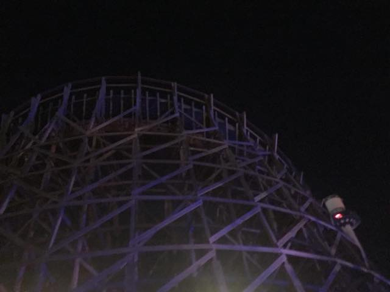
*Sigh* No. We did not do Gold Striker at night. I wish we did, but we didn't.
Yep. Just one more maze for us to do. Backwoods. Again, I liked it. It was a good maze. Hell, the outdoor theme really appealed to me. I'd probably say it was my 3rd favorite here, just behind Blackout and Wax Museum.
And yeah. I had to leave Haunt early to get started on that 5 hour drive home so that I hopefully get home before 3 AM so that I can get up and go to work tomorrow morning. I must admit. I wasn't sure what to think coming into CGA's Haunt, but I really liked it and was impressed. And I really enjoyed the rest of Great America too. Railblazer kicks ass, and I look foreward to coming back here soon.
Home
|